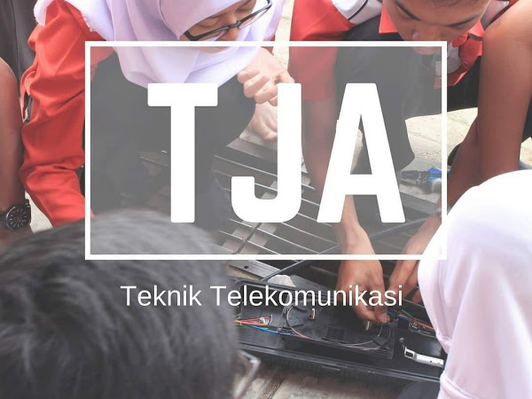
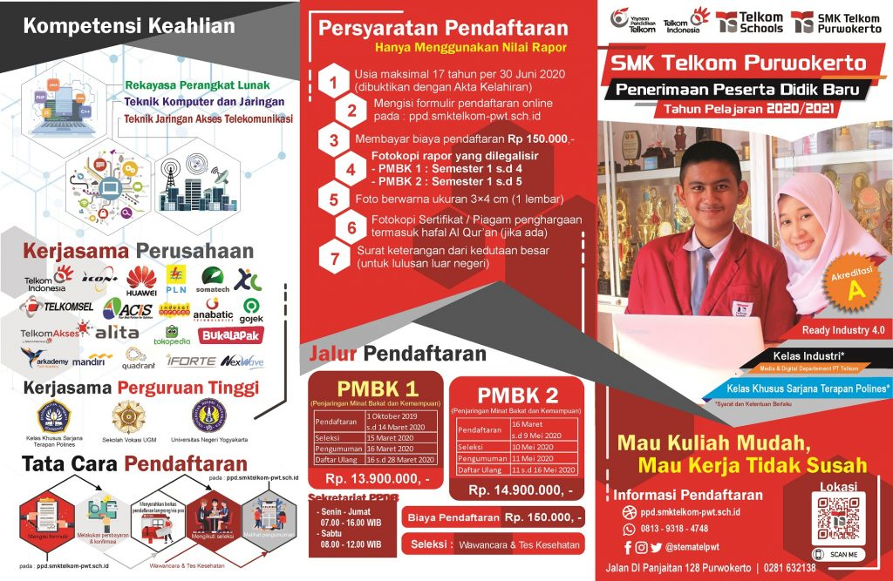

Tentang SMK Telkom

Sejarah SMK Telkom Purwokerto

Jurusan di SMK Telkom Purwokerto

Seleksi Masuk SMK Telkom Sandhy Putra Purwokerto
Masukan
SMK Telkom Purwokerto
Telkom Schools SMK Telkom Purwokerto didirikan pada tanggal 30 Januari 1993, dengan surat dari Kepala Kantor Wilayah Depdikbud Propinsi Jawa Tengah No.130/103/I/1993 tanggal 22 Januari 1993, tentang persetujuan pendirian sekolah swasta yang diselenggarakan oleh Yayasan Sandhykara Putra Telkom dan diresmikan oleh Menparpostel Bapak Soesilo Soedarman.
Visi dan Misi Sekolah
Visi :
SMK Telkom Purwokerto menghasilkan lulusan yang profesional di bidang Telematika, unggul di dunia kerja, mempunyai etos kerja tinggi, berbudi pekerti luhur, serta mampu berkompetisi dalam era global sampai dengan tahun 2020.
Misi :
1.Menyelenggarakan proses belajar yang sesuai dengan budaya lokal dan nasional,
2.Menyelenggarakan pendidikan dan latihan yang berwawasan mutu untuk mampu berkompetisi,
3.Mengembangkan sistem pendidikan dan pelatihan yang adaptif, fleksible dan berwawasan global.